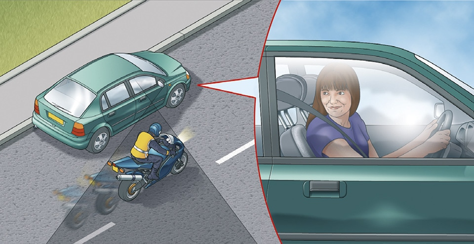

Using the road (159 to 203)
|
1. General rules (159 to 161)
159
Before moving off you should
Move off only when it is safe to do so.
Before moving off you should
- use all mirrors to check the road is clear
- look round to check the blind spots (the areas you are unable to see in the mirrors)
- signal if necessary before moving out
- look round for a final check.
Move off only when it is safe to do so.

Rule 159: Check the blind spot before moving off
160
Once moving you should
- keep to the left, unless road signs or markings indicate otherwise. The exceptions are when you want to overtake, turn right or pass parked vehicles or pedestrians in the road
- keep well to the left on right-hand bends. This will improve your view of the road and help avoid the risk of colliding with traffic approaching from the opposite direction
- drive or ride with both hands on the wheel or handlebars where possible. This will help you to remain in full control of the vehicle at all times. You may use driver assistance systems while you are driving. Make sure you use any system according to the manufacturer’s instructions.
- be aware of other road users, especially cycles and motorcycles who may be filtering through the traffic. These are more difficult to see than larger vehicles and their riders are particularly vulnerable. Give them plenty of room, especially if you are driving a long vehicle or towing a trailer. You should give way to cyclists when you are changing direction or lane – do not cut across them.
- select a lower gear before you reach a long downhill slope. This will help to control your speed
- when towing, remember the extra length will affect overtaking and manoeuvring. The extra weight will also affect the braking and acceleration.
161
Mirrors. All mirrors should be used effectively throughout your journey. You should
- use your mirrors frequently so that you always know what is behind and to each side of you
- use them in good time before you signal or change direction or speed
- be aware that mirrors do not cover all areas and there will be blind spots.
You will need to look round and check.
Remember: Mirrors – Signal – Manoeuvre